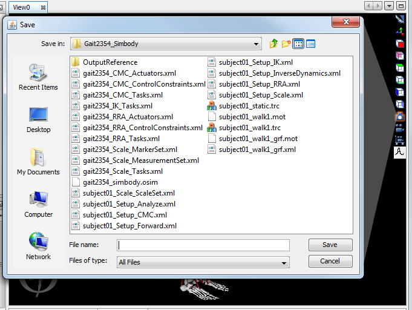
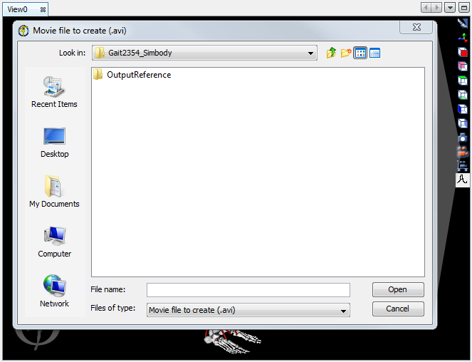
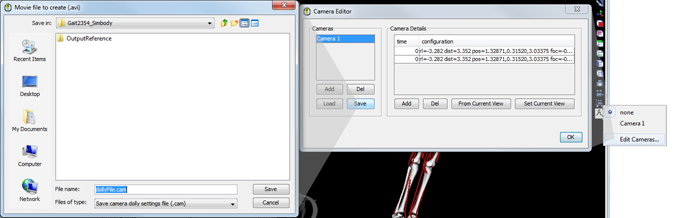

The topics covered in this section are:
Taking a Snapshot
To save the current view as an image:
|  |
|
|---|
Making a Movie
OpenSim allows you to save the simulation playback in an AVI format movie file using the movie camera button see Recording a Movie for more information. You can change the camera angle or its position with respect to the model during the recording session manually or if more precision is required, use a pre-defined camera path see Use a Pre-Defined Camera for more information. Posing the model with the coordinate viewer can also be recorded.
The quality of the recorded video depends on the speed of your computers Graphics Card. Recording using a slow Graphics Cards can result in errors that make the movie go very fast or seem 'jerky'. If you experience these issues, change the Graphics Card settings to favor performance over quality.
Recording a Movie
Are you using a 64bit version of OpenSim? If you are using 3.1, unfortunately you will not be able to make a movie due to graphics compatibility issues. However, as of OpenSim 3.2, we've added a workaround. Go to Preferences... and find the Option "Save Movie Frames". Turn this option "On". This will generate a set of still frames (.tiff) that you can compile into a movie with external software (there are many free options available). Alternately, you can install a 32bit version of OpenSim on your 64bit platform to create .avi movies. |
To record a motion as a movie:
|  |
|
|---|
Pre-defined Camera Positioning
Changing the user's (camera's) perspective during playback of a motion can be very difficult to do precisely and repeatedly. To assist you in preparing movies with a variety of camera angles, OpenSim provides a camera dolly and editing tools to construct the desired path of the camera during a recording session.
Create/Edit a Pre-defined Camera
To create or edit a camera path:
|  |
|
|---|
The Camera Editor window will appear with a list of available cameras in the Cameras pane on the left. Press the Add button underneath the Cameras pane to add a new camera. Remove a camera from the list by clicking on the camera name and then pressing the Del button underneath the Cameras pane.
To view and/or modify a camera's pre-defined configuration(s), select the camera in the Cameras pane with the left mouse button. Its configurations at various instances in time appear as a table in the Camera Details pane. The following list describes how to work with the Camera Details table:
add | To add a new configuration to the Camera Details pane, press the Add button. The current view and time, according to the time in the motion player, will be added to the table. |
edit time field | When a configuration is added to the Camera Details pane, the time that is saved to the table is the time in the motion player. You can manually edit the time field by double-clicking on it and entering a new value. |
update | You can update a configuration by selecting the desired row in the table using the left mouse button. Change the camera view in the 3D View window to the desired perspective and then press the From Current View button. Note that only the configuration of the camera (view) is changed; the time remains unchanged. |
view | A camera configuration can be previewed in the 3D View window by selecting the desired configuration using the left mouse button and pressing the Set Current View button. Note that only the configuration of the camera (view) is changed; the motion is not advanced or rewound. |
delete configuration | To delete a configuration from the list, select the desired row using the left mouse button. Then, press the Del button. |
Specify a list of times and corresponding configurations. During motion playback, the camera path will be generated by interpolating the position and orientation of the camera using the specified configurations and times. Therefore, to produce a smooth path, you need to consider the time intervals and configuration changes between entries in the list. For instance, when the camera is expected to undergo a large change in its orientation (e.g., 90o), you should specify several transitional configurations with short time intervals between them to ensure a smooth path, rather than just providing the first and last configurations.
Use a Pre-Defined Camera
To use a pre-defined camera path, clicking on the camera dolly button  in the 3D View window. A drop down menu appears, listing the available preset cameras, if any. "None" defaults to the current view. Select the desired preset camera. Then, press the play
in the 3D View window. A drop down menu appears, listing the available preset cameras, if any. "None" defaults to the current view. Select the desired preset camera. Then, press the play  or reverse play
or reverse play  button in the video controls to see the simulation as viewed with the pre-defined camera.
button in the video controls to see the simulation as viewed with the pre-defined camera.
{kind=link}
{kind=link}
{kind=link}